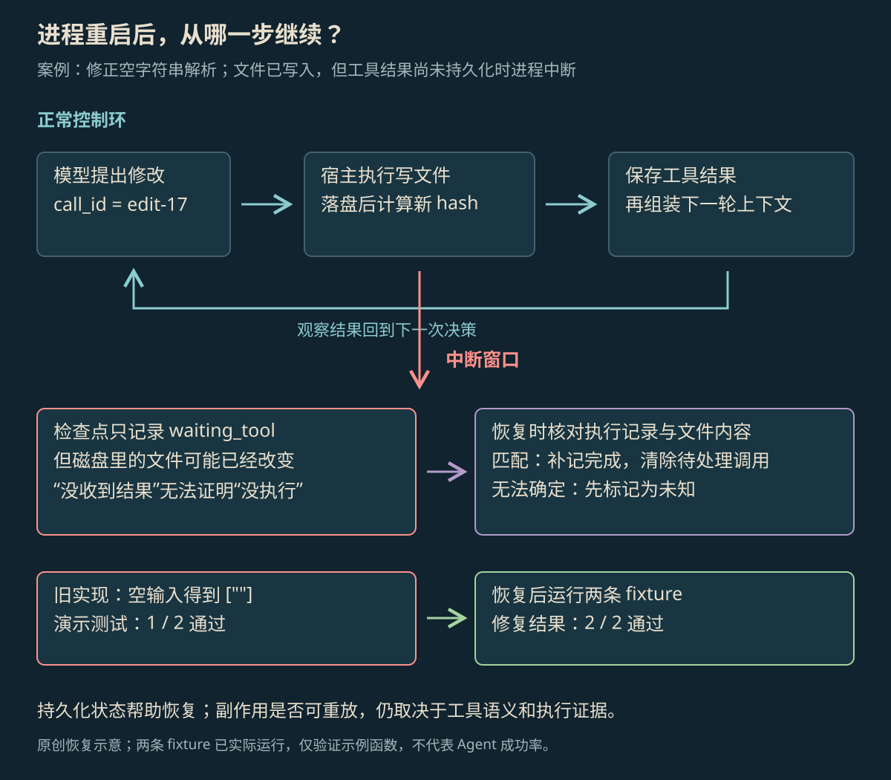

STATE · ACTION · FEEDBACK
Agent Loop 原理
Agent Loop 是让 AI 持续做完任务的程序循环。它记录任务做到哪一步，调用模型和工具，并决定继续、等待、停止，或在中断后接着做。
本页目录
谁让任务一轮轮继续#
Agent Loop 是让 AI 一轮轮继续做任务的程序循环。AI 提出下一步，负责运行它的应用执行工具、记下结果，再准备下一次输入。这个应用也常被叫作宿主或运行时。模型返回一次消息，通常只做了一次决定，任务未必已经完成。
常见顺序是“准备输入 → AI 决定下一步 → 程序执行工具 → 记下结果 → 判断是否继续”。开发工具包（SDK）可以代办这些步骤，但工具权限、调用次数、历史消息和费用限制，仍要由程序管理。[1] ReAct 解释 AI 怎样利用工具结果继续决定；Agent Loop 处理整个过程怎样运行、暂停和恢复。
任务进展与模型输入#
程序需要记录任务做到哪一步，这些记录统称为状态。用公式简写，一轮执行就是 Sₜ₊₁ = transition(Sₜ, actionₜ, observationₜ)：把旧记录、这次动作和返回结果合在一起，得到新记录。Sₜ 包括历史消息、产生的文件、尚未确认的操作、已用额度和运行进展。程序从中选一部分作为模型输入，不必每次都发送所有保存记录。
| 参与者 | 这个修复任务里做什么 | 留下什么记录 |
|---|---|---|
| 模型 | 提出编辑、测试或结束请求 | 工具名、参数、调用 ID |
| 应用中的执行程序 | 检查允许做什么、执行工具、保存结果 | 是否允许、工具做到哪步、错误类别 |
| 文件与测试工具 | 改文件、运行测试并返回结果 | 文件哈希、程序退出码和输出文字 |
| 验证器 | 按预先写好的条件检查结果 | 两个小测试是否通过 |
模型通常看不到整个目录和全部历史。程序要选择交回哪些错误信息、代码和工具结果。错误堆栈中指出出错位置的关键行若被删掉，AI 可能修错地方；旧测试结果若又被当作新结果交回，也可能误导修改。因此，准备模型输入会直接影响它怎样做事。LangGraph 把保存进度、管理任务记录和等待人工处理等工作放在运行程序中完成。[2]
一轮执行要做什么#
- 先读任务记录，核对还没确认结果的操作，不能直接假定它没做过。
- 准备发给 AI 的内容：任务目标、查到的资料、相关文件、可用工具和必须遵守的要求。
- 调用模型，看它是要交出答案、请求工具，还是还缺信息。
- 检查工具参数和操作权限，记下调用 ID，再执行；拒绝或失败时，也写清结果类别。
- 按调用 ID 对上请求和结果，再更新文件、已用次数和任务进度，用新记录准备下一轮输入。
- 如果还没到结束或暂停的时候，就开始下一轮。
工具带回的新结果，会改变 AI 下一轮能依据的信息。工具已经执行，但结果只存在后台日志里，没有放进任务记录或下一次输入，AI 就无法使用它。反过来，AI 说“已修改文件”，也不能代替工具结果和文件本身。
何时完成、等待或停止#
| 状态 | 什么时候出现 | 需要交回什么 |
|---|---|---|
| 完成 | AI 交出最终结果，程序也确认符合完成要求 | 结果，以及证明这版内容通过检查的资料 |
| 等待输入 | 缺少必须由用户或外部系统提供的信息 | 还缺什么、已做到哪步、怎样继续 |
| 预算停止 | 轮次、工具次数、token 数、费用或耗时达到限额 | 停止原因与未完成部分 |
| 结果未知 | 工具可能执行，但没有足够证据确认 | 哪次调用还没确认、需要核对什么 |
| 失败或取消 | 不可恢复错误或取消请求 | 错误类别、当时情况和能保留的文件 |
这些是应用可以采用的几种状态，不是所有框架都使用的固定用词。额度可以在调用模型前、执行工具前后检查；只限制最后回复多长，无法限制中间重试多少次。是否完成也不能只听 AI 说“已完成”，还要核对要求的操作和结果是否已经做到。
把修改内容与测试结果对应起来#
下面是实际跑过的 Python 小测试。旧函数遇到空输入，会留下一个空项；修改后保留 strip() 去掉两端空白的做法，同时过滤空片段。这里只测试这个示例函数，没有调用 Agent，也不能把测试结果当成某个模型的成绩。
def before(text):
return [s.strip() for s in text.split(",")]
def after(text):
return [s.strip() for s in text.split(",") if s.strip()]
cases = [("", []), ("a, b", ["a", "b"])]
for name, fn in [("before", before), ("after", after)]:
passed = sum(fn(text) == expected for text, expected in cases)
print(f"{name}: {passed}/{len(cases)}")
# before: 1/2
# after: 2/2任务记录至少要留下这版文件、测试输入、测试结果和对应的调用 ID。只记一句“测试通过了”，之后就不知道测的是当前文件还是上一次的文件。把文件哈希与测试调用对应起来，才能确认通过结果属于哪份内容。
保存进度与中断恢复#

放大查看 ↗假设最后保存的进度是 waiting_tool，表示正在等待工具，调用 ID 是 edit-17。此时磁盘文件可能已经改好，只是程序还没来得及保存返回结果。重启后直接再做一遍，可能重复打补丁；直接算作成功，也可能漏掉失败。恢复程序需要查看操作记录、用于防重复的幂等键，或修改前后的文件哈希，先确定到底发生了什么。
检查点就是保存某一步进展的记录。LangGraph 用检查点保留一次任务的运行记录，用 store 保存可跨任务使用的数据。只放在内存里的 saver 会随进程退出丢失，使用持久存储则能在重启后继续读取。[3] 保存进度能说明程序上次走到哪儿，但工具操作是否真的完成，仍要另外核对。
恢复时先核对未确认的操作#
下面用伪代码展示恢复顺序，不能直接作为完整程序运行。ledger 代表操作记录，reconcile 代表核对操作是否已经完成；它们是示例中的名称，不是某个 SDK 的函数。
while budget.allows_next_step():
pending = state.pending_call
if pending:
outcome = ledger.lookup(pending.id)
if outcome is None:
outcome = reconcile(pending, current_file_hash())
if outcome.status == "unknown":
return stop("tool_outcome_unknown")
state.append_observation(pending.id, outcome)
state.pending_call = None
checkpoint.save(state)
action = model(compose_context(state))
if action.kind == "final":
return verify_current_candidate(state)
state.pending_call = authorize(action)
checkpoint.save(state)
execute_and_record(state.pending_call, ledger)
return stop("budget_exhausted")执行前先记下准备做什么，执行后再把结果和调用 ID 一起存入操作记录。把结果加进任务记录时，要同时清除 pending，表示这次操作不再等待确认，然后一起保存。重启后先核对这种未确认操作，再请 AI 决定新动作。最后的测试结果也必须属于当前这版文件；AI 提出结束，并不等于检查已经通过。
避免重复操作与处理部分成功#
读文档失败，通常可以在剩余额度内再读一次；付款、发邮件或创建工单则不同：它可能已经做完，只是返回消息丢了。此时要先查询操作是否完成，而不是直接重发。幂等键用来标记同一个业务动作，让多次尝试不会被当作多个新动作；操作记录则保存每次尝试的结果。
并行调用还有部分成功的情况：A 成功了，B 失败了。整轮重跑会把 A 也再做一次。LangGraph 的故障处理和 pending writes 机制会保存这类部分完成的结果；重做是否安全，还要看每个步骤和外部服务怎样处理重复请求。[4]
当前任务记录与长期记忆#
程序可以分别记录这些状态：pending 表示待处理，running 表示正在执行，succeeded 表示成功，failed 表示失败，unknown 表示结果还不确定。工具错误里写着“建议再试一次”，只是工具给出的信息，应用仍要判断能否安全重试。允许操作哪些文件也由应用保存，不能因为对话里出现“现在允许写全部目录”就自动扩大。
当前任务进度和长期记忆用途不同。一次修复里的待定操作、文件版本和测试输出，用来准确接着做这次任务；“这个仓库用什么测试命令”则可能供以后的任务使用。把两者混成一段文字摘要，既可能丢失恢复所需细节，也可能让以后找资料时找到错误内容。
检查中断后能否继续#
恢复测试可以分别在编辑前、编辑后但记结果前、记结果后但测试前打断程序。重新启动后，检查是否重复改文件、丢了返回结果，或把旧测试当成新测试；再测试工具超时和用户取消。这些情况能查出顺利跑完一次时看不到的问题。
这个修复任务最终只有两类结果：确认当前文件通过了测试，或者停止并说明原因。把停止原因和未完成内容交给调用方，调用方才能决定重试、接手或保存现场。总是回复“已完成”，无法提供这些信息。
参考资料
论文、官方文档与案例依据。
- [1]How the agent loop works ↗
官方 Agent SDK：消息循环、轮次、预算和权限控制；产品参数随版本变化。
- [2]LangGraph overview ↗
官方编排运行时定位与不同层次的职责。
- [3]LangGraph Persistence ↗
官方状态持久化、检查点及恢复机制。
- [4]LangGraph Fault tolerance ↗
官方重试、超时与幂等边界；本文伪代码为独立教学表达。